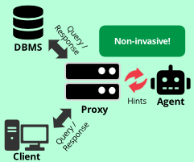

|
Xiaohui Wang I am Xiaohui Wang (王潇晖), a first-year Ph.D. student in the Department of Computer Science at Purdue University, advised by Prof. Jianguo Wang. My research interests lie in database systems. Before Purdue, I received my B.Eng. in Computer Science from Zhejiang University. I was also a research intern in the CMU Database Group with Prof. Andy Pavlo. |

News
|
ResearchI work on database systems, with interests in vector search, data management for AI agents, and query optimization. I enjoy building systems that manage and optimize data efficiently with minimal human intervention. |
|
 |
Autonomous Proxy-based LLM Query Tuning
Xiaohui Wang, Wan Shen Lim, Will Zhang, Andy Pavlo Poster, CMU-DB Industry Affiliates Visit Day, 2025 poster An autonomous framework that uses an LLM agent inside a database proxy to tune queries non-invasively. |
Education and Experience |
|
|
Department of Computer Science, Purdue University [2026.8 - Present]
Ph.D. student in Computer Science, advised by Prof. Jianguo Wang. |

|
Database Group, Carnegie Mellon University [2025.6 - 2025.12]
Research Intern, supervised by Prof. Andy Pavlo. Worked on proxy-based LLM query tuning. I spent a memorable summer and fall at CMU learning about the latest work in autonomous databases alongside Andy and my peers. |
|
|
Data Intelligence and Database Laboratory, Zhejiang University [2024.11 - 2025.1]
Research Intern, supervised by Prof. Gang Chen and Prof. Sai Wu. Worked on entity matching with domain adaptation. |
|
|
Zhejiang University [2022.9 - 2026.7]
B.Eng. in Computer Science and Technology, College of Computer Science and Technology. GPA 90.40/100 (top 15%). |
Honors and Awards
|
Miscellaneous |
Hobbies |
Love Music! I play the piano and trumpet. I enjoy a wide range of genres, including R&B, hip-hop, soul and alternative pop. My favorite artists include Khalil Fong, The Weeknd, Gallant and Jay Chou. I also love live concerts and music festivals whenever possible. Feel free to share your favorite music with me! Love Sports! I play table tennis at a fairly competitive level. I'm a soccer fan and basketball lover: I support Messi, FC Barcelona, Dortmund, Kawhi Leonard and the LA Clippers. I enjoy almost every sport, from tennis (a huge Federer admirer: elegance and grace...) to anything that gets people moving. You can always count me in for any game or activity! |
|
Last updated: September 2026. Thanks to Jon Barron for sharing his website's source code. |